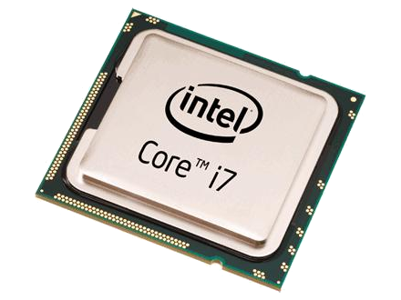

Важнейший элемент компьютера – центральный процессор, где производятся все необходимые вычисления и откуда поступают команды для управления компьютером.
Первые процессоры впаивались в материнскую плату. В дальнейшем с целью возможной быстрой замены процессоров были разработаны специальные разъемы, в которые можно было бы быстро установить необходимый процессор. Разъем - сокет (Soket), в который вставляются микросхемы процессора, которые находятся на всей поверхности разъема и слот (Slot), у которого контакты расположены по периметру либо на одной линии.
Перед заменой процессора вначале следует узнать тип сокета (разъем), расположенный на материнской плате, что можно выяснить из инструкции к ней, либо из информации в Интернете, предоставляемой фирмами- производителями.
Для установки процессора необходимо отключить компьютер от внешнего электропитания, отсоединить провода, подведенные к компьютеру и открутив винты крепления, снять защитный кожух корпуса системного блока. Затем требуется снять с себя статическое электричество, коснувшись неокрашенной части заземления, к примеру, батареи центрального отопления.
На современных платах вокруг разъема для центрального процессора находится четыре отверстия для установки вентилятора поверх процессора, как это показано на рисунке ниже. На современных разъемах имеется крышка, которая предохраняет контакты.
Процессор устанавливается в гнездо на основании скошенных углов (в современных и пазов). Если процессор имеет керамический PGA-корпус, то срезанный угол корпуса должен быть напротив фиксирующего рычага, а если корпус пластиковый, такой угол помечен изображением треугольника. Кроме того, на одном угле (или двух углах) процессора может отсутствовать штырь, соответственно на разъеме в этом месте будет отсутствовать отверстие.
ЦП обладает набором характеристик, характеризующих его производительность. Основные характеристики представленны в таблице 1.
| Производитель | AMD, Intel |
| Модель | Phenom II, Athlon II, Core i5, Core i7, Core2 DUO |
| Тактовая частота | 3.4GHz, 3,2Ghz, 3.0Ггц |
| Системная шина (FSB) | 4000 Mhz, 3200 МГц |
| Кеш-память | L2:4x512Kb L3:6Mb, 4Mb |
| Сокет | АM2, АM3, socket1156, socket1366 |
| Технологический процесс | 45nm, 32nm |
| Термопакет (TDP) | 125W, 73W |
| С кулером или без | Box, Tray |